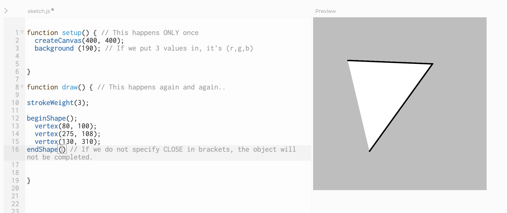
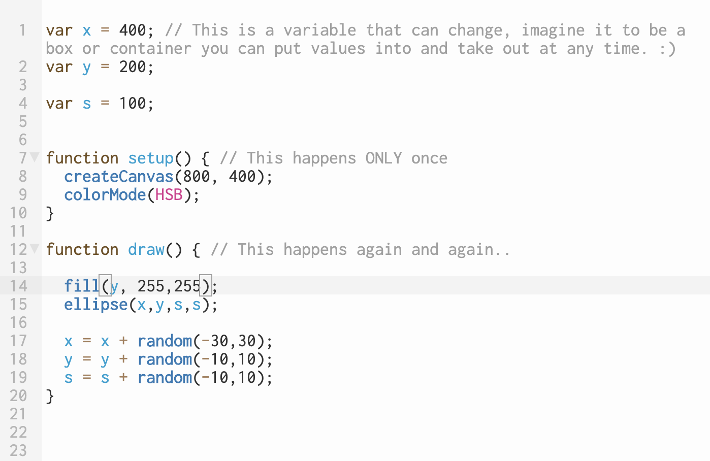

p5.js is a JavaScript library for creative coding, with a focus on making coding accessible and inclusive for artists, designers, educators, beginners, and anyone else! p5.js is free and open-source.
Using the metaphor of a sketch, p5.js has a full set of drawing functionality. However, you’re not limited to your drawing canvas. You can think of your whole browser page as your sketch, including HTML5 objects for text, input, video, webcam, and sound.
It is also..
A community of designers, creative coders, artists and problem solvers who are keen to learn, make and help each other. This is where we begin. :)
IDE Basics
This is the IDE or the Integrated Development Environment that we will be working with.
It basically helps us to code realtime and see what we are doing in a relatively quick and simple way.
Things to look at.
- There is a play button on the top left which runs your code.
- There is a stop button, that stops your code.
This IDE is completely web based where you can save your code and access it on any browser.
You can also see a bunch of really interesting examples to learn from too.
This is where we will be writing our code. It is totally okay, if this looks daunting as of now.
It gets less scary.
p5 References
This is the single most important resource for you to start learning and to continue learning new things.
p5 is an open source JavaScript library and platform. This means that if you have a question or cannot understand how to do what you want to do, this is where you can go.
Learning to Draw with p5
There is a basic code structure to consider when starting out with p5.
You will notice a bunch of text which reads function setup() and some stuff inside it.
And another bunch of code that reads, function draw() and some stuff inside it.
The first thing to note, is that when a code is exececuted, there is an order to it.
The function setup() happens first and only once.
The function draw() happens again and again and again..
The next thing you will notice is a function called createCanvas(400,400) // (width, height)
This is a function which firstly draws our canvas that we will be drawing on. This is the same as creating a canvas on Illustrator. You need to define the width and height of the canvas, this is in pixels.
Basic Shapes
Lines, Curves and Custom Shapes
A really great visualisation of how Quadratic Curves and Bezier Curves work can be found here!

Workshop Exercise!
Take an existing artwork, photograph, image and drawing that you like and try recreating it in p5.
This is obviously not a test but we can share what we make and then learn from that
Basics of Animation
Now, notice when we move the background from the setup to the draw loop, we suddenly have an animation!
Now that we have something animated, we can start playing with this really quickly and start manipulating it as best as you see fit

colorMode() and Opacity
By default, we are using (r,g,b) as our colors but p5 also allows you to write colors in HSB which stands for Hue, Saturation and Brightness. Again this takes values from 0 - 255.
What this allows us to do, is change colour by changing only one value which is the Hue.
Again, a really great visualisation here!
The random() function
We can start this final part of the workshop by asking ourself, what really is random.
In mathimatical terms, you can imagine random to be the generation of a random number or variable. Imagibe throwing a die and getting a value. This is completely random.
Everytime you throw the die, there is an equal chance of getting a number from 0 to 6
We as designers, can visualise this into so many things.

More References

The Coding Train // This is the first guide to learning more p5 and creative coding that you should look at.
Daniel Shiffman is amazing!
Don't Fear The Internet If you'd like to learn more about the web and how to put your code on the internet, this is a really great blog to follow.